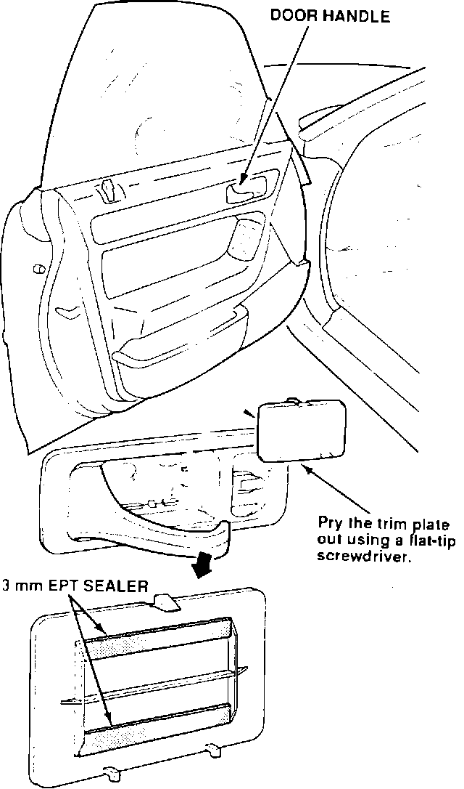

Rattles At the Door Handle
Symptom:Rattles from the door handle area of the door lining.
Probable Cause:
The door handle trim plate is loose.
Corrective Action:

1. Remove the door handle trim plate, and apply two 10 mm strips of 3 mm EPT sealer to the back.
2. Reinstall the door handle trim plate.
WARRANTY CLAIM INFORMATION
Operation number:
818020
Flat rate time:
0.2 hour
Failed P/N:
72160 SL5-A01
Defect code:
043
Contention code:
B07